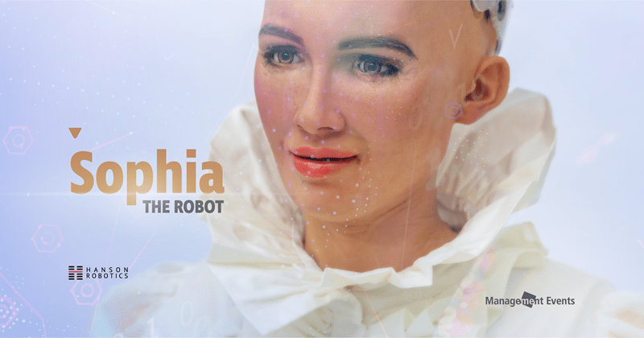
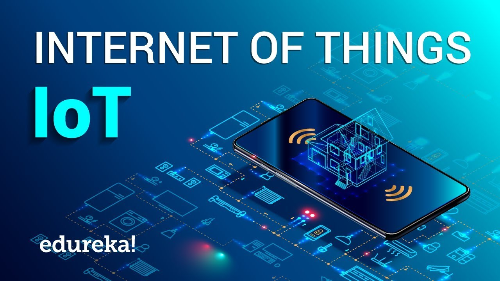
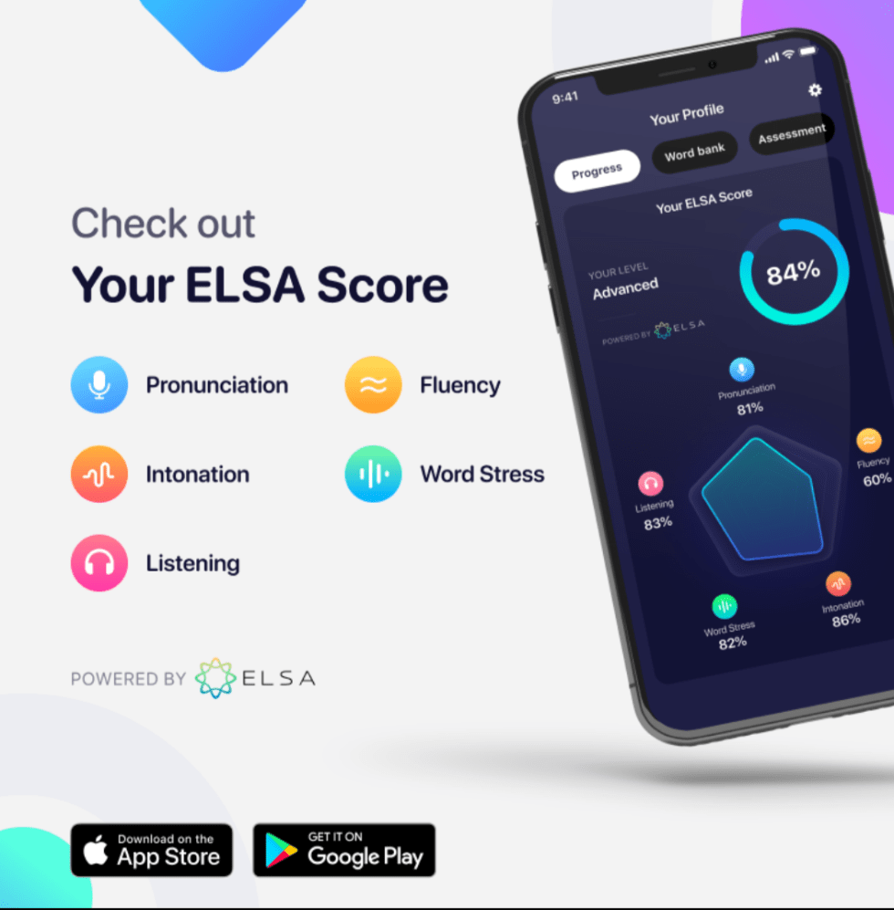
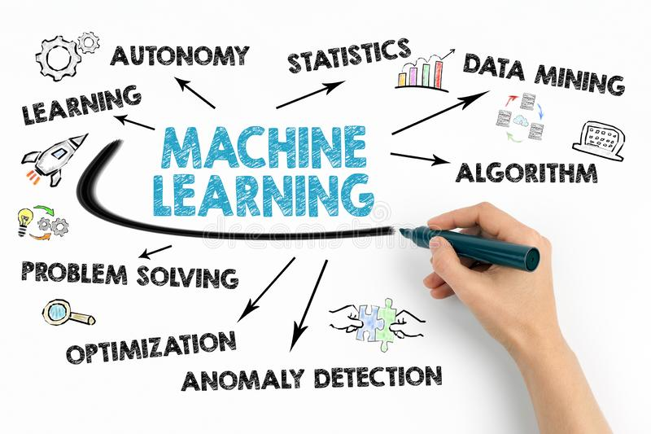
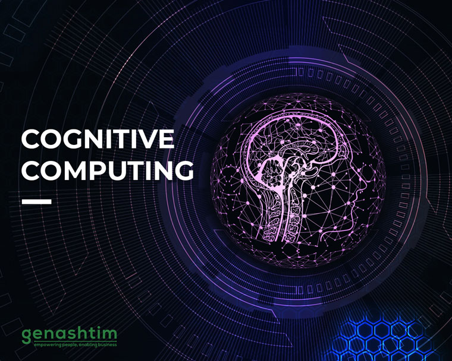
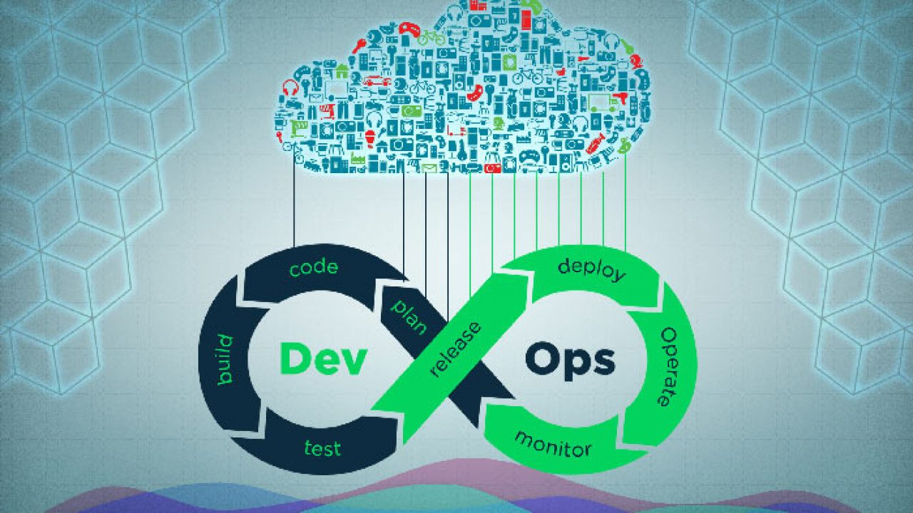

Top 10 Trending Technologies
Artificial Intelligence Artificial Intelligence (AI) is a trending technology that takes first place in the list of top 10 latest technologies in computer science of 2021. AI technology involves machine intelligence, which is as smart and intelligent as the human brain and reacts like humans. Today, AI contributes to society numerously, for example, in the form of virtual assistants such as Google Assistant, Siri, Cortana, and Alexa.
Robotic Process Automation (RPA) is another popular and trending technology that allows us to automate business processes. RPA neither requires coding for development nor direct access to the database. It has a list of commands executed by bots under some standard set of business rules.

Internet of Things (IoT) is a system of interrelated computing devices, objects, digital machines, animals, or people that have unique identifiers (UIDs), and this technology can transfer data over a network without human-to-human or human-to-computer interactions.
Intelligent Apps are applications that make use of historical and real-time data from user interactions and many other sources to make predictions and suggestions. Different AI components, such as Machine Learning, robotics, general intelligence, expert systems, and NLP, are used in developing Intelligent Apps.
5G is the Fifth Generation mobile broadband, beyond Long-term Evolution (LTE) mobile networks. It is a game-changer and a trending technology, that improves our network connections. Through this, we will get faster, stable, and secure connections. Hence, shortly, we will have 5G mobiles in our hands.
Machine Learning (ML) is a set of algorithms that find and apply patterns to data. ML is a trending technology that discovers rules causing a problem by using the data and finds a solution to that problem.
Blockchain technology is an entirely new way of documenting data on the Internet. Sometimes, it is also referred to as the distributed ledger technology (DLT). The information recorded on Blockchain is distributed but not copied, and it can be in any form, such as ownership of something, someone’s identity, a transaction, etc.

Cognitive Computing technology integrates with certain concepts in Artificial Intelligence (AI), such as natural language processing (NLP), Machine Learning (ML), reasoning, speech recognition, etc., that help in improving human decision-making.
Virtual Reality is the next big thing in the world. This modern technology generates sounds, realistic images, and other sensations that will leave you in a spectacular imaginary world.
.jpg_cropX1=916&cropX2=4248&cropY1=304&cropY2=2180.png)
‘DevOps’ is an enterprise software development phrase, which has emerged from the terms ‘Development’ and ‘Operations’ of the software development life cycle (SDLC) and is a part of the Cloud technology. As the name suggests, DevOps encourages collaboration, communication, automation, and integration among the IT operations team and the developers to improve the quality and speed of delivering software. It is considered the offspring of the agile software development method.
| top 10 latest technologies of | example | example |
|---|---|---|
| Artificial Intelligence | Alexa | Siri |
| Robotic Process Automation (RPA) | Call centre operations | Support the sales process |
| Internet of Things (IoT) | Home Security | Activity Trackers |
| Intelligent Apps | Elsa Speak | IRIS |
| 5G | Airtel | Jio |
| Machine Learning | Speech recognition | Medical diagnosis |
| Blockchain | Blockchain 1.0: Currency | Blockchain 2.0: Smart Contracts |
| Cognitive Computing | Numenta | WayBlazer |
| Augmented Reality/Virtual Reality | Augmented reality (AR) | Virtual reality (VR) |
| DevOps | Docker | Jenkins |